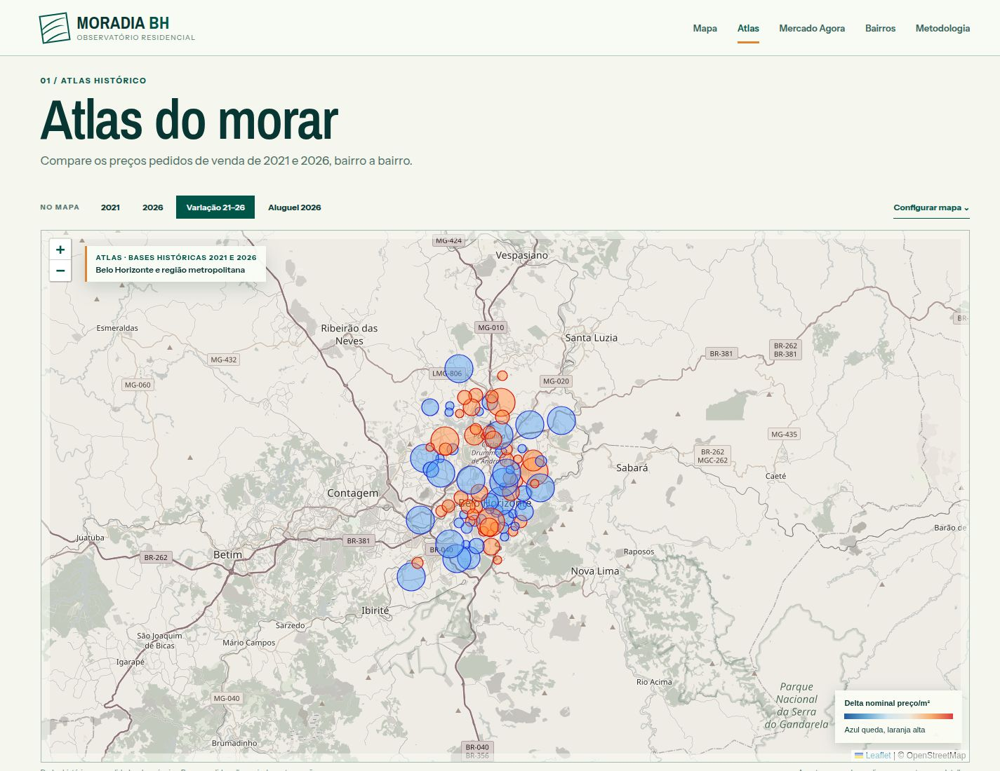

Mapa de Valores Imobiliários em Belo Horizonte
Sempre gostei de mapas e queria aprender melhor scraping e coleta automática. Comecei raspando anúncios de imóveis em Belo Horizonte e organizando os dados por localização. A ideia é acompanhar como os valores aparecem e mudam pela cidade — ou simplesmente procurar bairros onde os preços estão mais baixos.
Implementação / 03
- Interface
- HTML + JavaScript + Leaflet
- Publicação
- Site estático no GitHub Pages
- Coleta
- Python; anúncios do QuintoAndar
- Histórico local
- PostgreSQL em Docker
- Dados do site
- JSONs históricos e coletas aceitas
- Comparação
- Mediana de venda/m² por bairro
- Testes
- Testes de coleta e validação
- Estado
- Publicado; em desenvolvimento

Por que um mapa de imóveis
Sempre gostei de mapas e comecei a querer construir aplicações que usassem mapas para visualizar informações. Também queria aprender melhor scraping e coleta automática.
Comecei raspando anúncios de imóveis em Belo Horizonte e organizando os dados por localização. A ideia é acompanhar como os valores aparecem e mudam pela cidade — ou simplesmente procurar bairros onde os preços estão mais baixos. Antes de chegar ao mapa, tem bastante trabalho com anúncios repetidos, valores e endereços.
Fontes utilizadas
O projeto começou como um mapa de valores imobiliários em Belo Horizonte e hoje se chama Moradia BH. Há dois recortes: o Atlas usa bases de anúncios de venda de 2021 e 2026; o Mercado Agora mostra principalmente anúncios de aluguel das coletas recentes.
As bases históricas estão em arquivos JSON separados por ano. Os dados recentes vêm de um coletor do QuintoAndar. Venda histórica e oferta atual de aluguel têm fontes e métodos diferentes e ficam em ambientes distintos na interface.
Coleta e validação
O coletor em Python prepara os anúncios e verifica o lote antes de gravá-lo. Entre as verificações estão falhas de leitura das páginas, ausência de cidade ou bairro e uma queda excessiva na quantidade de anúncios em relação à última coleta aceita.
Uma coleta incompleta poderia fazer imóveis parecerem retirados do mercado. Por isso, um lote rejeitado não substitui os dados aceitos anteriormente. Os testes incluem rejeitar uma coleta truncada antes de gravar seus anúncios. O histórico é mantido em PostgreSQL local; o site recebe arquivos JSON exportados.
Valores, duplicidades e localização
A normalização converte preços e medidas, separa aluguel, condomínio e IPTU e calcula aluguel por m² quando há área válida. Dentro de uma coleta, registros repetidos são eliminados pela identidade do anúncio e pela fonte. Isso não garante reconhecer o mesmo imóvel anunciado com identidades diferentes.
Cidade e bairro são normalizados para consulta a um cache geográfico. Quando falta a coordenada do anúncio, o coletor pode usar uma referência do bairro. Essa posição tem precisão de bairro; não representa o endereço exato do imóvel.
Construção do mapa
A interface usa HTML, JavaScript e Leaflet. Os arquivos JSON alimentam camadas, filtros e consultas por bairro. A navegação por fragmentos da URL permite publicar as diferentes telas no GitHub Pages sem configurar rotas no servidor.
O banco completo fica no computador que executa a coleta. Para consultar o site, o navegador carrega os arquivos públicos, sem acessar diretamente o PostgreSQL. O agendamento local depende de o computador estar ligado e conectado.
Comparação entre períodos
No Atlas, a variação é calculada a partir da mediana do preço pedido de venda por m² em cada bairro. A comparação exige o mínimo de anúncios configurado nos dois anos. A base de 2021 foi tratada como apartamentos porque não possui o tipo de imóvel.
No Mercado Agora, mudanças entre coletas descrevem a oferta observada de aluguel. A entrada ou saída de imóveis com características diferentes pode alterar a mediana mesmo sem mudança no preço dos anúncios que permaneceram. Essas coletas não formam uma série única com o Atlas de venda.
O que os dados não permitem concluir
O valor anunciado não é o valor de uma transação. As amostras também não representam todos os imóveis da cidade. Comparar duas medianas não permite atribuir a diferença à valorização de um mesmo conjunto de imóveis.
Amostras pequenas, mudanças na composição dos anúncios e localizações aproximadas limitam a leitura por bairro. O projeto continua em desenvolvimento. Na captura do Mercado Agora feita em 8 de outubro de 2026, a última coleta não foi concluída e o site manteve a base aceita anteriormente. Esse estado também faz parte do funcionamento que ainda estou acompanhando.
Ferramentas
- HTML
- JavaScript
- Leaflet
- Python
- PostgreSQL
- Docker
- JSON
- Testes de coleta